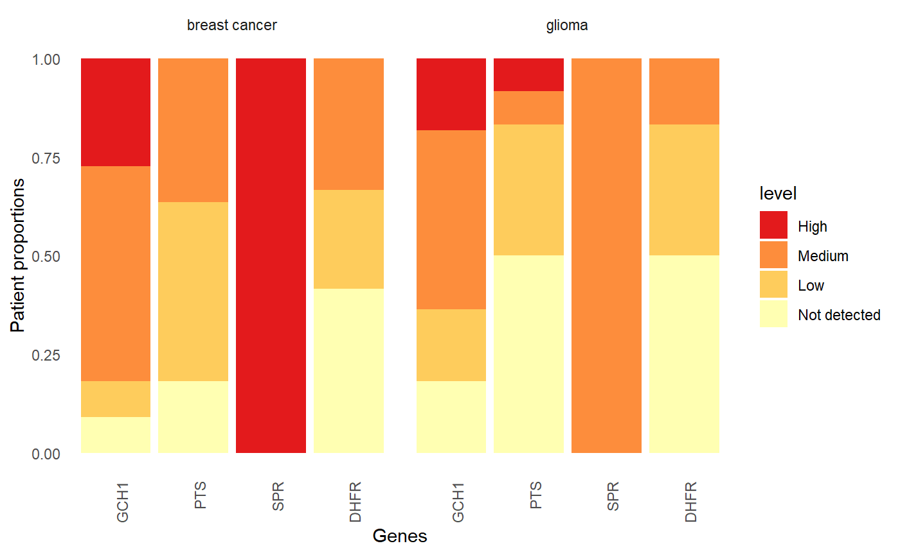

1. Quick-start guide: Acquire and visualize the Human Protein Atlas (HPA) data in one function with HPAanalyze
Anh N. Tran
DataGrata LLCtrannhatanh89@gmail.com
4/1/2021
Source:vignettes/a_HPAanalyze_quick_start.Rmd
a_HPAanalyze_quick_start.RmdBackground
The Human Protein Atlas (HPA) is a comprehensive resource for exploration of human proteome which contains a vast amount of proteomics and transcriptomics data generated from antibody-based tissue micro-array profiling and RNA deep-sequencing.
The program has generated protein expression profiles in human normal tissues with cell type-specific expression patterns, cancer and cell lines via an innovative immunohistochemistry-based approach. These profiles are accompanied by a large collection of high quality histological staining images, annotated with clinical data and quantification. The database also includes classification of protein into both functional classes (such as transcription factors or kinases) and project-related classes (such as candidate genes for cancer). Starting from version 4.0, the HPA includes subcellular location profiles generated based on confocal images of immunofluorescent stained cells. Together, these data provide a detailed picture of protein expression in human cells and tissues, facilitating tissue-based diagnostic and research.
Data from the HPA are freely available via proteinatlas.org, allowing scientists to access and incorporate the data into their research. Previously, the R package hpar has been created for fast and easy programmatic access of HPA data. Here, we introduce HPAanalyze, an R package aims to simplify exploratory data analysis from those data, as well as provide other complementary functionality to hpar.
The different HPA data formats
The Human Protein Atlas project provides data via two main mechanisms: Full datasets in the form of downloadable compressed tab-separated files (.tsv) and individual entries in XML, RDF and TSV formats. The full downloadable datasets includes normal tissue, pathology (cancer), subcellular location and RNA expression data. For individual entries, the XML format is the most comprehensive, providing information on the target protein, antibodies, summary for each tissue and detailed data from each sample including clinical data, IHC scoring and image download links.
HPAanalyze overview
HPAanalyze is designed to fullfill 3 main tasks: (1)
Import, subsetting and export downloadable datasets; (2) Visualization
of downloadable datasets for exploratory analysis; and (3) Working with
the individual XML files. This package aims to serve researchers with
little programming experience, but also allow power users to use the
imported data as desired.
Visualize protein expression data
Currently, this is available for the normal tissue, pathology
(cancers) and subcellular location datasets. The fastest and easiest way
is to use the defaults of hpaVis.
hpaVis(targetGene = c("GCH1", "PTS", "SPR", "DHFR"),
targetTissue = c("cerebellum", "cerebral cortex", "hippocampus"),
targetCancer = c("glioma"))
#> No data provided. Use version 21.1.
#> targetCellType variable not specified, visualize all.
#> * WARNING: targetCellType variable not specified, visualize all.
#> >> Use hpaListParam() to list possible values for target variables.
#> Use hpaListParam() to list possible values for target variables.
Of course, we cannot visualize everything in those big datasets, so some defauts will be used and you will receive some warning messages.
hpaVis()
# No data provided. Use version ...
# targetGene variable not specified, default to TP53, RB1, MYC, KRAS and EGFR.
# targetTissue variable not specified, default to breast.
# targetCellType variable not specified, visualize all.
# * WARNING: targetCellType variable not specified, visualize all.
# >> Use hpaListParam() to list possible values for target variables.
# targetCancer variable not specified, default to breast cancer
# Use hpaListParam() to list possible values for target variables.You can also use hpaVis to show just one or two of the
three graphs.
hpaVis(visType = "Patho",
targetGene = c("GCH1", "PTS", "SPR", "DHFR"),
targetCancer = c("glioma", "breast cancer"))
#> No data provided. Use version 21.1.
One exception though, if you want to plot all cancers, use
hpaVisPatho with targetCancer = NULL
(default).
hpaVisPatho(targetGene = c("GCH1", "PTS", "SPR", "DHFR"))
#> No data provided. Use version 21.1.
#> * WARNING: targetCancer variable not specified, visualize all.
#> >> Use hpaListParam() to list possible values for target variables.There are many ways you could customize your plots. Please see the documentation for more details.
?hpaVis # the easy umbrella to visualize protein expression levels
?hpaVisTissue # in normal tissue
?hpaVisSubcell # in subcellular compartments
?hpaVisPatho # in cancersIf you want to know what kind of data you can visualize, use
hpaListParam. You will receive a list of parameters you can
use. Please note that if you ask the functions to plot anything that is
not on this list, they will just ignore it and plot what are
available.
#> No data provided. Use version 21.1.
#> List of 2
#> $ normal_tissue:List of 2
#> ..$ tissue : chr [1:63] "adipose tissue" "adrenal gland" "appendix" "bone marrow" ...
#> ..$ cell_type: chr [1:141] "adipocytes" "glandular cells" "lymphoid tissue" "hematopoietic cells" ...
#> $ pathology :List of 1
#> ..$ cancer: chr [1:20] "breast cancer" "carcinoid" "cervical cancer" "colorectal cancer" ...Acquiring individual sample data from the Human Protein Atlas
HPA provide data in two different formats: the more convenient
summarized data tables that are used for the hpaVis
functions above, and detailed annotated data for every sample and every
antibody in the xml format. There is one xml for each protein, which
contain all data generated by HPA. However, extracting information from
these xml files into a tidy format is a challenge. The
hpaXml functions are designed to help you easily access
this.
The easiest way is to use the umbrella hpaXml()
function. Please note that at the moment this function only accept
Ensembl gene id.
EGFR <- hpaXml(inputXml='ENSG00000146648')
names(EGFR)
#> [1] "ProtClass" "TissueExprSum" "Antibody" "TissueExpr" This function will return a list. The first item
ProtClass is the known and predicted class of the queried
protein. The second item TissueExprSum give you the quick
summary of protein expression in normal tissue and image url to download
one representative image. The third item Antibody provide
information on all antibodied used by HPA to stain for the queried
protein.
The last item TissueExpr is a list of data frame, one
for each of the antibodies. Each row will have everything available
regarding a sample stained with an antibody (clinical data, protein
expression via IHC and the Url to download the original image). If you
find an empty data frame, that means the antibody was used only for IF
staining to determine subcellular locations. Currently HPAanalyze does
not support extraction of that data.
To better understand the output, please read the documentation for
other hpaXml functions, which was called under the hood by
hpaXml().
?hpaXmlGet # import the xml file as "xml_document"
?hpaXmlProtClass
?hpaXmlTissueExprSum
?hpaXmlAntibody
?hpaXmlTissueExprCopyright
Anh Tran, 2018-2022
Please cite: Tran, A.N., Dussaq, A.M., Kennell, T. et al. HPAanalyze: an R package that facilitates the retrieval and analysis of the Human Protein Atlas data. BMC Bioinformatics 20, 463 (2019) https://doi.org/10.1186/s12859-019-3059-z